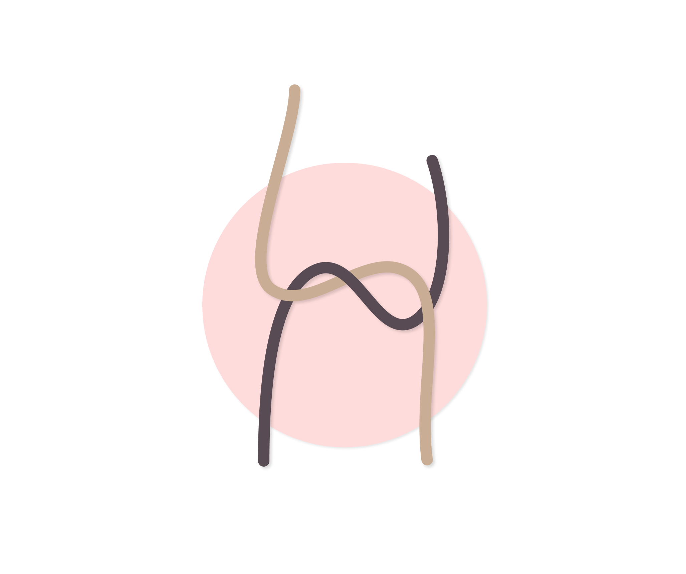
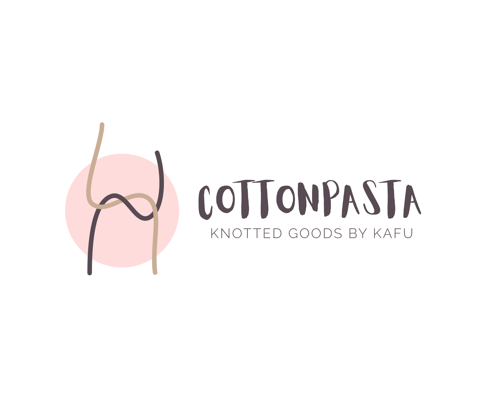
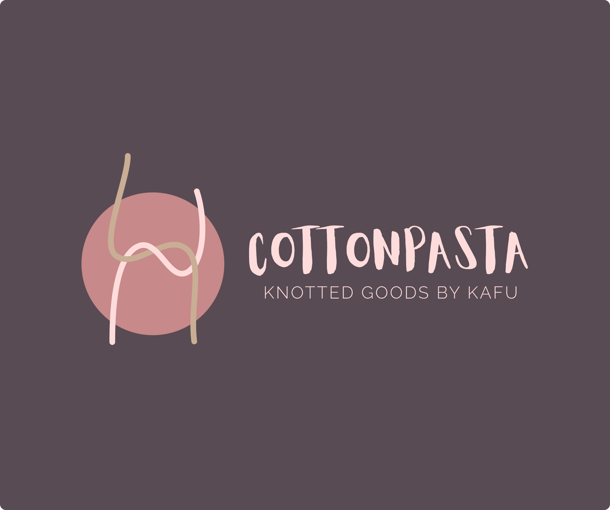

Some of my friends had already been knitting and crocheting, and in 2021 due to COVID, I struggled with how to spend my free-time without exposing myself to any danger. So I started to explore the world of macrame.
I've always enjoyed creative activities and making anything by hand. So macrame was my first choice of sports of the granny olympics. No tools needed, just my bare hands and the cords.
I taught the knots myself with the help of some artists who had how-to videos for the basic and more extraordinary knots. And I started to experiment and combine the knots in various ways.
I even had some friends who ordered wall decorations from me. They showed me inspiration photos and I realized - by recognizing the knots within any already existing macrame pieces from just a picture - I can even achieve the exact same piece they picked out. Also, I could adjust them if they didn’t like some part of the inspiration piece and change it to something they prefer more.
Here are examples from the cottonpasta instagram account, to give you an idea about the whole thing.
So first there was the brand name.
I love it. It's referring to the cords themselves with a cheeky, fun touch.
Furthermore, my secret wish was also fulfilled: these two words are so simple and searched for a lot on social media. This way my account could gain even more visibility.
When I found this compound word, I already had something in mind for the logo, I just needed to find the right colours, shapes and composition.
Without further ado, here's the logo and the brand identity in one picture.
Out of pure curiosity, I created a dark version of it as well.
